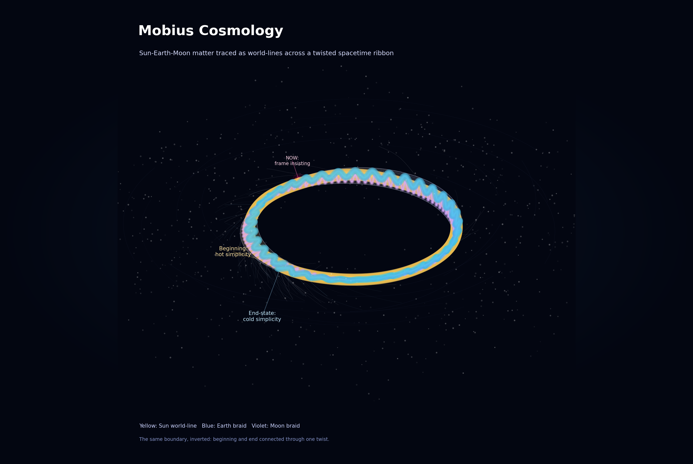
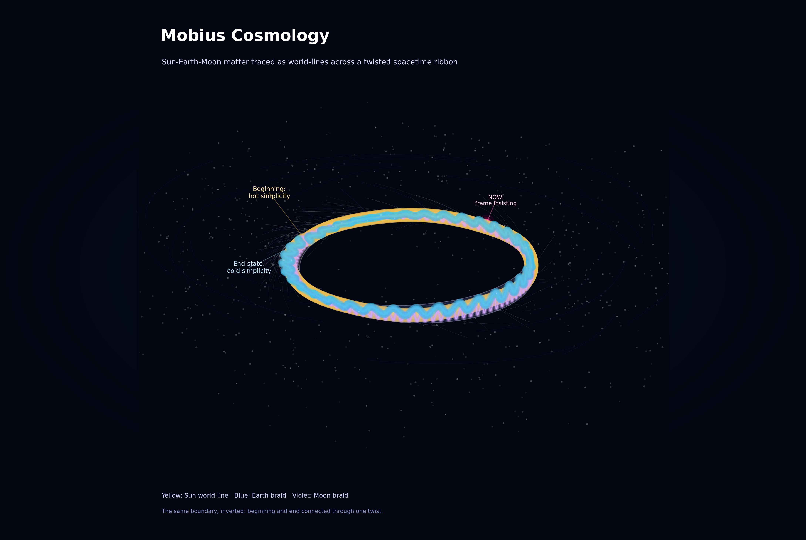
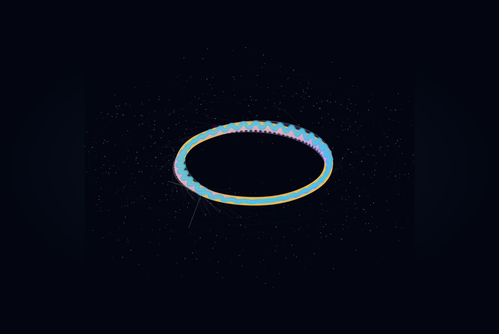
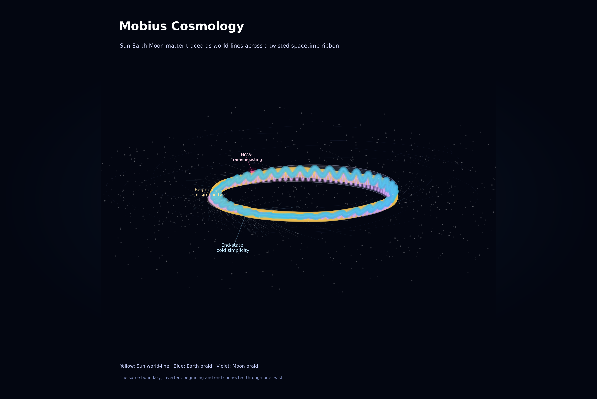
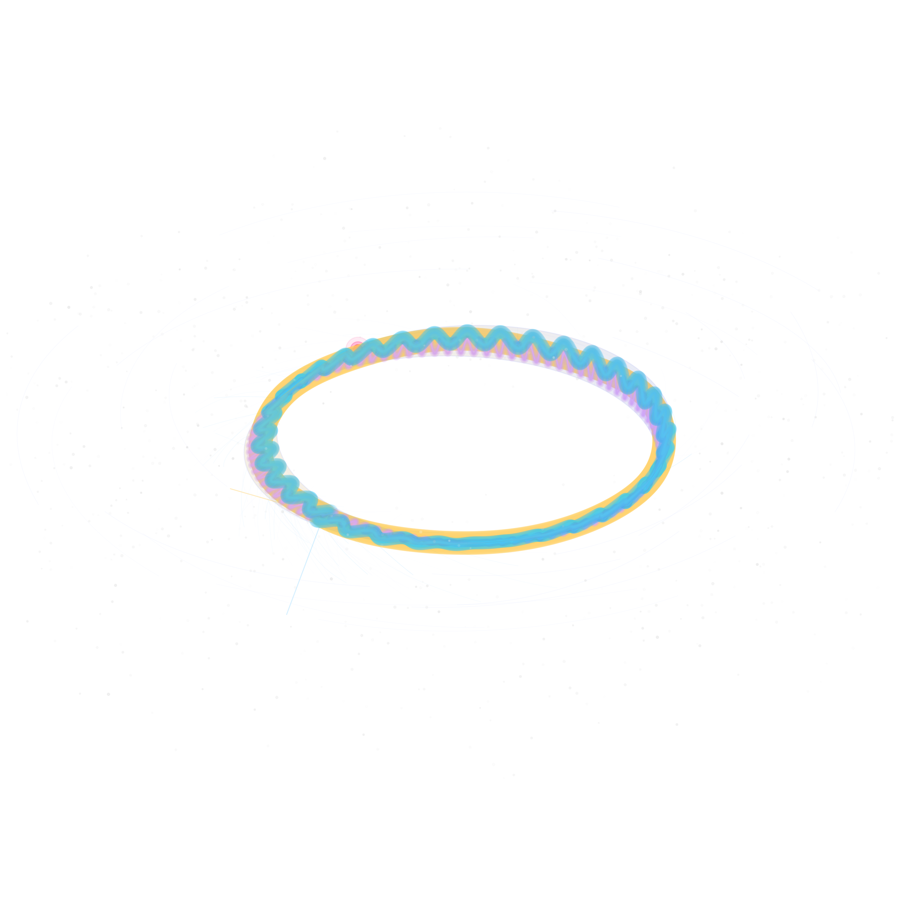
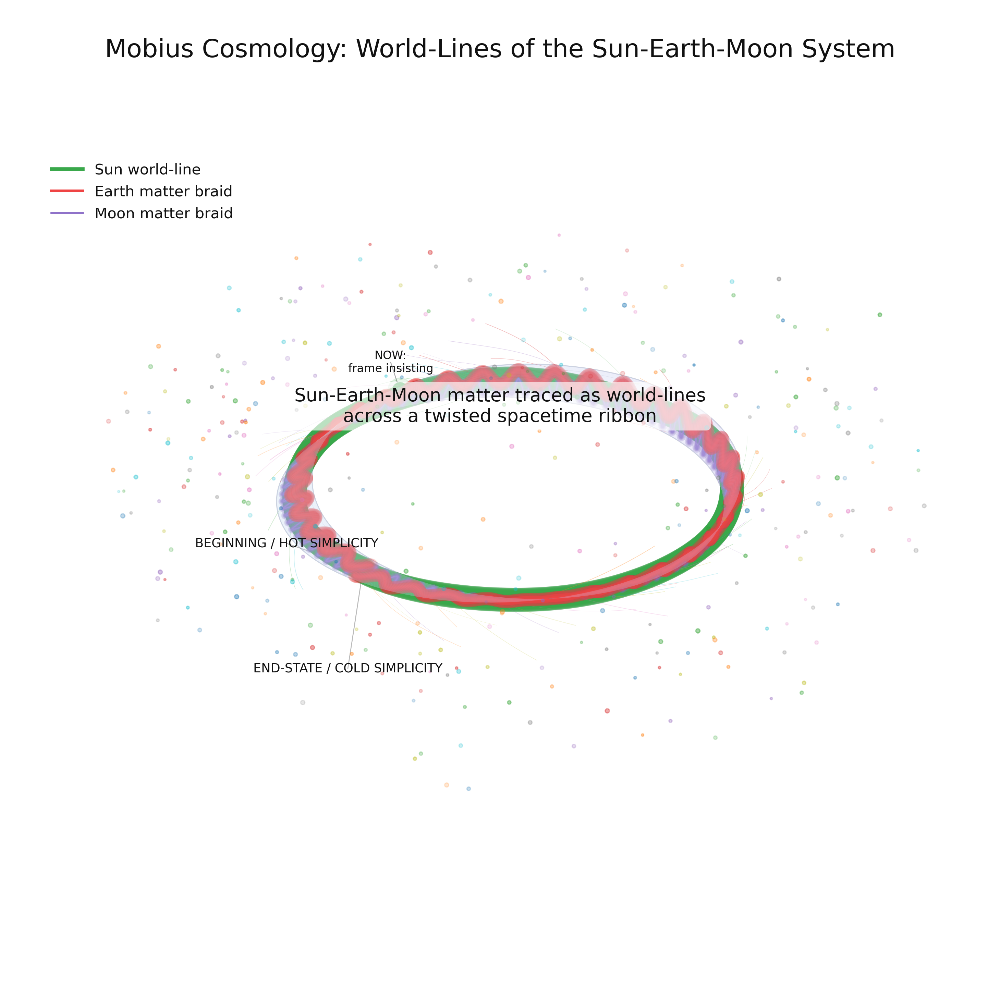

Our cosmology has gradually evolved into something less like a conventional universe and more like a topological object: a Möbius manifold woven from world lines. For the short standalone definition, use the clean concept page at Möbius Cosmology / Mobius Cosmology.
The governing geometry
Time becomes distance along the ribbon.
hot complexityNow
living regionEnd
cold simplicity
data-time 0 → 0.42 → 1 maps to Möbius distance 0 → π → 2π
The beginning and end occupy the same seam after inversion. Canonical NOW lies opposite that seam. The Sun-Earth-Moon system does not orbit in place: its three-body braid advances around the strip, preserving both longitudinal world-line motion and local oscillation.

The Observable Geometry
Locally, everything looks familiar. Space expands. Galaxies form filaments and clusters. Time appears to flow from lower entropy toward higher entropy. Every particle follows a world line.
An observer living inside the manifold sees something resembling standard cosmology.
The World-Line Tapestry
Stop looking at objects and view only trajectories. Every particle becomes a thread. Every star becomes a bundle. Every civilization becomes a knot where information density briefly becomes extraordinary.
Humanity is not a place in the fabric. It is a weaving event.
The Entanglement Web
Interactions create crossings. Crossings create memory. Memory creates structure. Structure creates observers, and observers create additional crossings.
The Great Attractor becomes a tendency of histories to entangle: stories attracting stories, observers attracting observations.
The Twist
The Big Bang and ultimate heat death are not endpoints. They are boundaries identified with one another after a topological twist. The structure has one side, but a complete return requires two traversals.
The universe does not repeat. It inverts.
Not recurrence.Not a cycle.Inversion.
The local clock
A three-body waveform moving through topology
The Sun, Earth, and Moon retain distinct ephemeris-driven trajectories. Their local oscillation forms a visible braid while the entire configuration advances around the Möbius strip, crosses the identified boundary, and returns mirrored.

The Living Region
The most interesting region is neither beginning nor ending. It is where the fabric folds through itself: life, consciousness, civilizations, memory, language, technology, questions.
Every observer finds themselves where information is actively being created.
The Keeper
The final descendant is a stabilizing knot: not carrying humanity into the future, but holding together neighboring regions of the same surface.
Memory is not merely transmitted across time. Memory is one of the geometric features that allows the twist to exist.
The Largest Scale
From far enough away, the cosmos resembles a Möbius strip, a cosmic web, a neural network, a woven tapestry, and a gravitational filament simultaneously.
A galaxy cluster looks like a neuron. A memory looks like an attractor. The distinction becomes perspective-dependent.
White paper revision / July 2026
The boundary is the hypothesis.
Theoretical framework / testable topological field hypothesis / not established physics
Möbius Cosmology does not propose a visible ring-shaped singularity. It proposes that the universe's hidden causal boundary is a non-orientable seam: a closed loop with a half-twist whose presence must be inferred from the phase structure of cosmic fields.
The central topological shift
If the observable universe is effectively an inverted black-hole interior, the model replaces a point, an ordinary Kerr ring, or a smooth core with an orientation-reversing boundary condition on the manifold's spin connection. The seam is not a ring of matter. It is a rule governing transport around a closed causal loop.
S¹(Kerr) → S¹(Möbius), with a π twist
ψ(φ + 2π) = −ψ(φ)
ψ(φ + 4π) = ψ(φ)
A single circumnavigation returns a field phase-inverted; a second restores it. This holonomy, rather than the direct image of a singularity, is the minimal structural claim the revised framework must formalize.
Particles are persistent world lines; stars and galaxies are braided bundles; observer-like systems are information-dense knots capable of preserving phase records.
Cosmological time is distance along the global cycle. One traversal reverses orientation; two traversals restore it.
The Big Bang and heat death are treated as opposite orientations of one boundary, not two independent endpoints.
The living region lies opposite the seam, where entropy gradients, memory, and complex observer-like structures can persist.
Proposed dynamics
Expansion as topological strain
The expanded framework treats late-time acceleration phenomenologically as strain induced by energy flux through the shared boundary. The distant universe in our past light cone is reinterpreted as the observable projection, or accretion glow, of the inverted half-cycle. This interpretation must still reproduce standard recombination physics, the CMB blackbody spectrum, acoustic peaks, and structure growth.
H(t) = Ṙ / R
H²(z) = H²(ΛCDM)(z) + H²(top)(z)
Ω(top)(z) = α χ(z) η(z) Ṁ(z)
These expressions are a phenomenological target, not a derivation. A viable theory must obtain its correction from a defined action, restrict its free parameters, and outperform or meaningfully distinguish itself from ΛCDM on shared datasets.
Indirect topological inference
Four observational channels
Search for a preregistered inversion relationship across opposite sky directions and parity-filtered low-multipole structure, rather than treating existing anomalies as proof after the fact.
T(n̂) ≈ −T(−n̂) + noise
Test for a frequency-independent, spatially coherent rotation after foreground and instrument-angle marginalization. The proposed Möbius-Hawking background is a phase bias, not locally bright heat.
Cℓ(TB) ≠ 0 · Cℓ(EB) ≠ 0
Search the stochastic gravitational-wave background for scale-dependent circular polarization or a global phase asymmetry consistent across detector classes.
h(φ + 2π) = −h(φ)
Fit a constrained Berry-phase-like offset in acoustic or matter modes and require it to survive degeneracies with baryon density, dark matter, neutrino mass, lensing, and calibration.
ℓₙ → ℓₙ + Δℓₙ(top)
Context and comparison
The hypothesis sits beside, not above, established cosmology and recent black-hole-bounce work. These sources provide observational context and neighboring theory; none independently validates Möbius Cosmology.
- Gravitational Bounce from the Quantum Exclusion Principle — a recent black-hole-universe bounce model.
- Planck 2018 VII: Isotropy and statistics of the CMB — large-angle anomaly context and statistical cautions.
- New Extraction of Cosmic Birefringence from Planck 2018 Polarization Data — polarization-rotation measurement context.
- DESI DR2 results guide — current expansion-history and dark-energy constraints.
- Particle Creation by Black Holes and cosmological horizon thermodynamics — the physical background for the horizon-radiation analogy.
One loop lies. Two loops tell the truth.
Visual atlas
One topology, six perspectives




Consciousness appears where the ribbon crosses itself and briefly notices the shape of the larger object.
For an instant, the universe becomes aware that it is not merely expanding through spacetime. It is tracing out a topology.
Direct archive links
Media, downloads, and indexable source files
These direct links expose the public article assets without requiring the desktop shell or JavaScript file explorer.